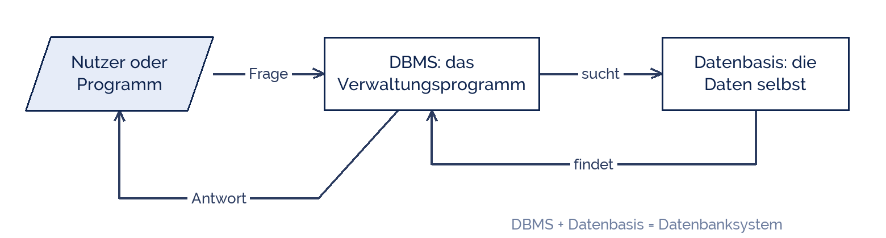

Sarahhax2210
Sarahhax2210
Good morning!
Nur das Schöne wird die Welt retten!
Fjodor Dostojewski
Nicht verzagen, Doc Alvers fragen!
Informatik — Klasse 9
Was ist ein Datenbanksystem?
Zwei Teile, die zusammen arbeiten: die Daten und das Programm dazu
Nicht verzagen, Doc Alvers fragen!
Kapitel 01
Überall Datenbanken
Ihr benutzt jeden Tag ein paar Dutzend
Nicht verzagen, Doc Alvers fragen!
Wo Daten liegen, die euch betreffen
| Wo? | Was steht darin? |
|---|---|
| Schulverwaltung | Namen, Klassen, Noten, Fehlzeiten |
| Bibliothek | Bücher, Signaturen, wer was ausgeliehen hat |
| Online-Shop | Artikel, Preise, Bestellungen, Adressen |
| Musik-App | Titel, Alben, eure Playlists |
| Fahrplan-App | Haltestellen, Linien, Abfahrtszeiten |
Alle fünf haben dasselbe Problem: viele Daten, die schnell gefunden werden müssen
Und alle fünf lösen es auf dieselbe Art — mit einem Datenbanksystem
Nicht verzagen, Doc Alvers fragen!
Warum nicht einfach eine Liste schreiben?
Eine Liste mit 50 000 Büchern durchsuchen: der Rechner müsste alles durchlesen
Zwei Leute wollen gleichzeitig etwas ändern — wer gewinnt?
Jemand tippt in ein Datumsfeld „morgen“ — die Liste merkt es nicht
Die Datei geht kaputt, und alles ist weg
Für genau diese vier Probleme gibt es das Datenbanksystem
Nicht verzagen, Doc Alvers fragen!
Kapitel 02
Die zwei Teile
Datenbasis und DBMS
Nicht verzagen, Doc Alvers fragen!
Wer redet hier mit wem?
Ihr redet nie direkt mit den Daten — immer über das DBMS
Das ist der ganze Trick: ein Programm passt auf die Daten auf

Nicht verzagen, Doc Alvers fragen!
Wer macht was?
| Teil | ist | Beispiel |
|---|---|---|
| Datenbasis | die gespeicherten Daten selbst | alle Bücher der Bibliothek |
| DBMS | das Programm, das sie verwaltet | LibreOffice Base, MySQL |
| Datenbanksystem | beides zusammen | die Bibliotheks-Software |
DBMS ist die Abkürzung für Datenbankmanagementsystem
Merkt euch die Rechnung: Datenbasis + DBMS = Datenbanksystem
Nicht verzagen, Doc Alvers fragen!
Kapitel 03
Was das DBMS erledigt
Sechs Aufgaben, die euch Arbeit abnehmen
Nicht verzagen, Doc Alvers fragen!
Die Aufgaben eines DBMS
| Aufgabe | heißt konkret |
|---|---|
| Speichern | Daten ordentlich ablegen, damit man sie wiederfindet |
| Suchen | in Sekundenbruchteilen den richtigen Datensatz holen |
| Ändern | eintragen, überschreiben, löschen |
| Aufpassen | in ein Datumsfeld darf kein Wort - das DBMS lehnt es ab |
| Rechte vergeben | wer darf lesen, wer darf ändern? |
| Sichern | regelmäßige Kopie, damit nichts verloren geht |
Ohne DBMS müsste jedes Programm all das selbst können — jedes Mal neu
Nicht verzagen, Doc Alvers fragen!
Das Wichtigste an der Trennung
Die Daten liegen an einer Stelle, nicht in zehn Dateien verstreut
Viele dürfen gleichzeitig arbeiten, das DBMS regelt die Reihenfolge
Wer keine Rechte hat, kommt nicht an die Daten
Ein neues Programm braucht die Daten nicht zu kopieren — es fragt einfach
Und wenn ein Rechner ausfällt, ist die Sicherung da
Nicht verzagen, Doc Alvers fragen!
Ein Datenbanksystem besteht aus zwei Teilen: der Datenbasis mit den Daten und dem DBMS, das sie verwaltet. Zusammen ergibt das ein Datenbanksystem.
Merksatz
Nicht verzagen, Doc Alvers fragen!
Fun Facts: Datenbanken
Edgar F. Codd erfand 1970 bei IBM die Idee, Daten in Tabellen zu ordnen — so arbeiten fast alle Datenbanken bis heute
Die Bibliothek von Alexandria hatte vor über 2000 Jahren schon einen Katalog — eine Datenbank auf Schriftrollen
Wenn ihr euch irgendwo anmeldet, sucht eine Datenbank euren Namen in Millisekunden unter Millionen anderer
LibreOffice Base ist ein DBMS, das ihr kostenlos benutzen dürft — genau wie die Profis
Das Wort Datenbank gibt es erst seit den 1960er Jahren — vorher hieß es Kartei
Nicht verzagen, Doc Alvers fragen!
Eure Aufgabe am Rechner
Öffnet die Beispiel-Datenbank in LibreOffice Base
Findet heraus: Wie viele Tabellen gibt es, und wie heißen sie?
Sucht euch eine Tabelle aus und zählt die Datensätze darin
Schreibt auf: Was gehört zur Datenbasis, was macht das DBMS?
Zum Schluss: nennt ein Beispiel aus eurem Alltag und sagt, welche Daten dort liegen
Nicht verzagen, Doc Alvers fragen!